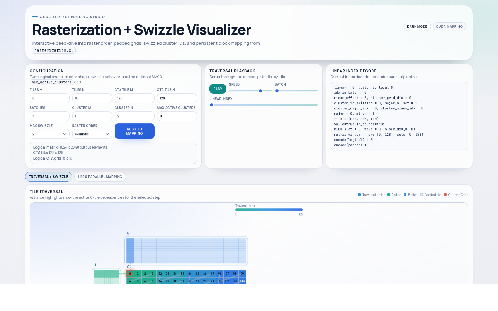
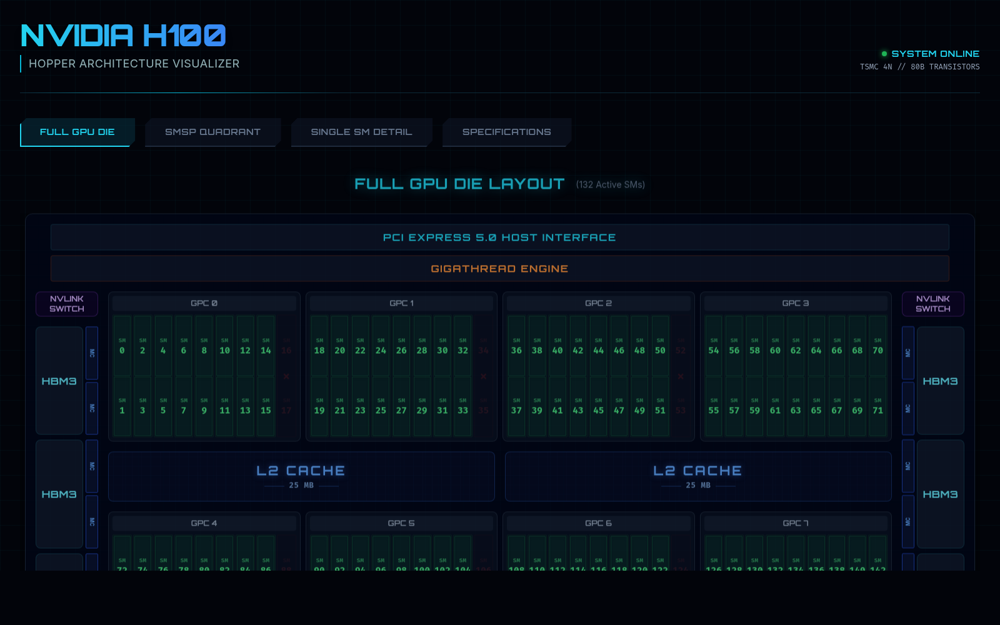
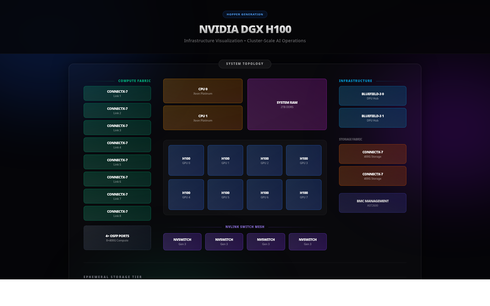
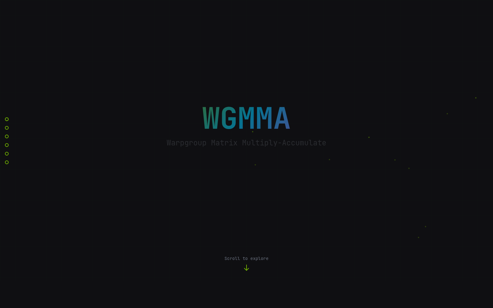
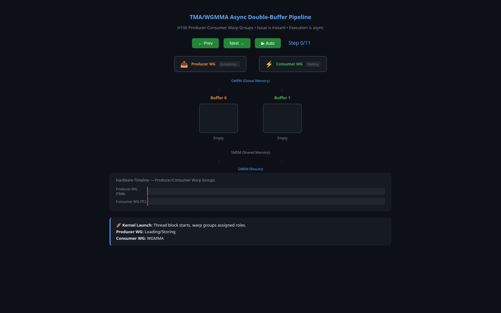
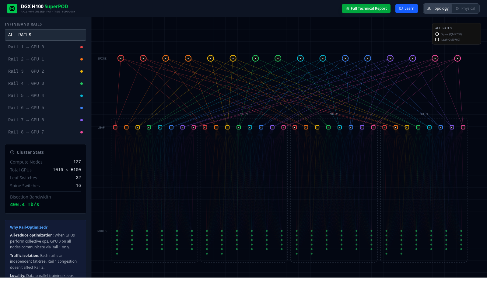
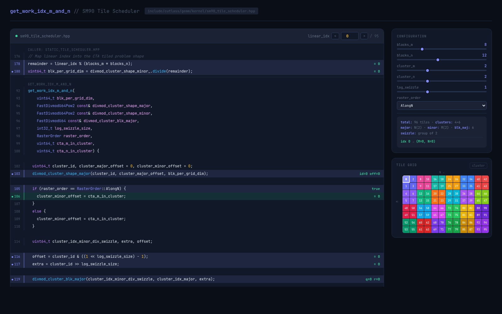

01
Asynchronous execution is the center of the story.
Older CUDA instincts assume issue and completion are nearly one mental unit. Hopper makes overlap, wait logic, and producer-consumer coordination part of everyday kernel design.
A course by Prateek Shukla
Hopper taught as the asynchronous machine: mbarrier, cp.async.bulk, TMA,
WGMMA, warp-specialized kernels, and multi-GPU orchestration.
Why This Course Exists
The site focuses on how Hopper actually works: asynchronous execution, descriptor-driven movement, synchronization semantics, tensor-core dataflow, and the distributed systems context required at H100 scale.
01
Older CUDA instincts assume issue and completion are nearly one mental unit. Hopper makes overlap, wait logic, and producer-consumer coordination part of everyday kernel design.
02
TMA descriptors, swizzles, layout choices, shared memory staging, and barrier-linked transfers matter as much as the math itself when you want tensor cores to stay fed.
03
NVLink, Stream-K scheduling, NCCL setup, PMIx, and Slurm show up because real training systems do not stop at one GPU, and neither should the mental model.
Course Structure
The sequence starts with architecture and state spaces, then moves through barriers, TMA, WGMMA, compute-bound kernel design, and finally the distributed orchestration stack.
Architecture, memory hierarchy, execution hierarchy, and the shift toward asynchronous thinking.
Thread block clusters, distributed shared memory, state spaces, and address-space conversion.
Latency hiding, mbarrier, producer-consumer hazards, wait patterns, and correctness under overlap.
TMA descriptors, tensor shapes and strides, swizzling, interleaving, and descriptor-driven transfers.
cp.async.bulkBulk async copies, multicast, prefetching, reductions, and barrier-based completion semantics.
Warpgroups, wgmma.mma_async, register and shared-memory sourcing, and tensor-core dataflow.
Commit and wait groups, FP8 behavior, stmatrix, packing, and sparse WGMMA constraints.
Warp specialization, pipelining, circular buffering, persistent scheduling, Stream-K, and launch strategy.
NVLink, NVSwitch, topology, bottlenecks, and why scaling changes how you reason about the machine.
Slurm, PMIx, NCCL communicators, collectives, and the orchestration behind large training systems.
Deep Dives
The syllabus above shows the full climb. This section stays tighter: four high-signal entries that cover the machine model, synchronization, kernel design, and distributed orchestration without turning the homepage into another full lesson index.
Lesson 01
Start with Hopper as a machine: architecture, memory hierarchy, SMSPs, Tensor Cores, schedulers, and the reason asynchronous execution changes how the rest of the course needs to be read.
Lesson 03
Move from architecture into synchronization: proxy separation, RAW and WAR hazards, mbarrier,
cluster barriers, async groups, and the rules that make overlap correct instead of accidental.
mbarrier tracks, how phases flip, and why acquire semantics matter.cp.async.bulk, WGMMA consumption, and shared-memory ownership handoff.Lesson 08
Step from primitives to full kernels: arithmetic intensity, warp specialization, circular buffers, cooperative versus ping-pong pipelines, persistent scheduling, Stream-K, cluster multicast, and epilogue design.
Lesson 10
Finish at the orchestration layer: Slurm job control, PMIx bootstrap, GPU binding under
CUDA_VISIBLE_DEVICES, NCCL communicator setup, collective primitives, and the parallelism
patterns that actually use the fabric from lesson 9.
Code Reality
A big part of this material is not slides in isolation. It is reading how descriptors, barriers, warpgroup math, scheduling, and measured kernels become concrete structures in the code. Pick a thread below and watch the pipeline take shape in the actual files.
Code Anchors
These references are already in the repo. They are where the course connects architecture diagrams to scheduler logic, shared-memory layout, descriptor construction, and measured kernels.
A CUTLASS SM90 kernel with ping-pong staging, warp-specialized producer and math groups, ordered sequence barriers, and scheduler-linked shared storage.
Persistent Stream-K decomposition, work-tile bookkeeping, reduction units, and the scheduler rules that determine how work moves across the machine.
Shared-memory matrix descriptors, inline PTX, explicit warpgroup fences, and direct
wgmma.mma_async usage for bf16 GEMM kernels.
From-scratch kernels with measured bf16 matmul results, including runs that outperform cuBLAS on selected H100 matrix sizes.
Interactive Visualizations
These companion visualizations are already live on GitHub Pages. The homepage keeps them lighter now: each preview loads on demand inline, with a full-view link whenever you want the standalone interactive.
01
Tile traversal, padded grids, swizzled cluster IDs, and persistent block mapping from
rasterization.cu.

02
A dedicated architecture visualization for reading Hopper as a machine: major structures, hierarchy, and the chip-level surfaces the course keeps referring back to.
Open H100 Visualizer
03
A system-level view of the node: GPUs, fabric, and the kind of topology context that matters once the course moves beyond a single device.
Open DGX Visualizer
04
A scrollytelling walkthrough of WGMMA operations, swizzling, descriptors, and async load behavior on Hopper.
Open WGMMA Visualizer
05
A compact buffer-and-timeline view of overlapped load, compute, store, and barrier-driven progression through the asynchronous pipeline.
Open Barrier Visualizer
06
An interactive view of thread block clusters: residency, distributed shared memory topology, and how clusters coordinate across SMs on Hopper.
Open Cluster Visualizer
07
A live walkthrough of CUTLASS SM90 tile scheduling: swizzle groups, cluster-major and cluster-minor
offsets, raster order, and the get_work_idx_m_and_n mapping from linear CTA work to
output tiles.

FAQ
Short answers about prerequisites, scope, and what this course is actually trying to teach.
It starts at lesson 1, but it assumes you are already comfortable with C or C++ and reading normal CUDA kernels. The focus here is Hopper’s execution model, not CUDA basics.
It teaches Hopper mechanisms directly: asynchronous execution, mbarrier, clusters,
distributed shared memory, CUtensorMap, cp.async.bulk, WGMMA,
warp-specialized kernel design, and the multi-GPU stack that shows up in real training systems.
Because Hopper is built around overlap-first execution. Request and completion are no longer one mental event, and the course keeps returning to that point through barriers, descriptor-backed movement, shared-memory staging, and warpgroup tensor-core issue.
Start Here
The lessons connect the execution model, descriptors, waits, tile scheduling, tensor-core dataflow, and multi-GPU orchestration in one place.